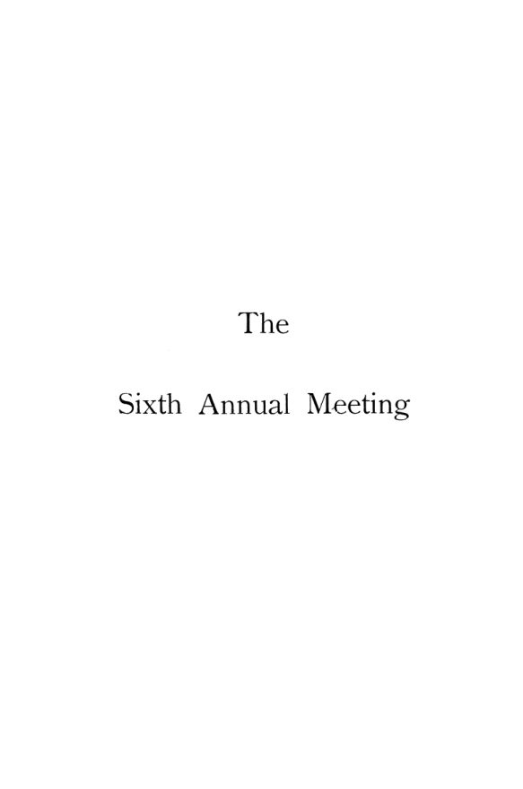

Chicago, 1893: o dinheiro, o juro e a origem do capital
Leitura: 5 min
Um único dia em Chicago, em setembro de 1893, no meio de uma crise: o crédito tornou a moeda irrelevante? De onde vêm o juro, o capital e os salários?


Em 12 de setembro de 1893, em Chicago, a American Economic Association reuniu-se sem o seu presidente. Charles F. Dunbar estava doente, e a sessão da noite anterior, reservada ao seu discurso, foi cancelada. O encontro inteiro coube num só dia: o Instituto Internacional de Estatística, convidado pelas associações americanas de estatística e de economia, ocupava a mesma cidade de 11 a 15 de setembro, as datas antes previstas para a reunião.
O primeiro trabalho tocou na ferida do momento. Francis A. Walker, do MIT, perguntou se a expansão do crédito tornara irrelevante a quantidade de moeda. Respondeu que não e citou como prova a crise comercial recente, atribuída à retirada de apenas uma parte das notas em circulação. Atkinson, que dizia acompanhar cerca de 1.600 fábricas pelo seu trabalho com seguros, contestou o diagnóstico e o tamanho do estrago. Fábricas paradas se contavam às centenas, ou às dezenas, e não aos milhares:
“é um exagero terrível” (“it is a terrible exaggeration”)
Para Atkinson, aquela era uma crise não comercial, fruto de má legislação e de incompreensão dos princípios monetários. Para medir a economia, ele preferia a conta de baixo para cima à soma das câmaras de compensação.
Quem paga o juro, e por quê?
Arthur T. Hadley, de Yale, deslocou a pergunta: o retorno da classe capitalista é o lucro; o juro é só a parte que um grupo de capitalistas paga a outro pelo controle da produção. O debate que se seguiu foi o mais vivo do dia. Franklin, da Johns Hopkins, negou que os clássicos ingleses tivessem chamado o juro de justo; Taussig defendeu a abstinência como ideia indispensável; Giddings separou risco, comutação e juro “mínimo”.
Capital é um estoque de coisas ou um fundo permanente?
John B. Clark, de Amherst, recém-eleito presidente, respondeu à teoria austríaca do juro com uma imagem: o capital é como uma queda-d’água, cujas gotas passam enquanto a queda permanece.
“o capital é perpétuo; mas as coisas que a cada momento o compõem logo desaparecem” (“capital is perpetual; but the things that at any moment compose it soon pass away”)
A distinção entre capital e bens de capital atravessou o resto do dia. Patten propôs fundir economia e utilitarismo numa só ciência. Taussig mostrou que os alemães, desde Hermann em 1834, trocaram o fundo de salários por uma explicação circular. No fecho, Hadley usou a distinção de Clark para separar Adam Smith de Ricardo.
O volume abre com o Hand Book de 1894: estatuto, dirigentes, conselho e a lista de sócios, que o texto estima em cerca de 800. Pelo relatório, o Conselho elegeu Clark presidente e Jeremiah W. Jenks secretário e marcou a reunião seguinte para o Columbia College, em Nova York, na temporada de festas de 1894.
Na minha leitura
Na minha leitura, a troca entre Walker e Atkinson é o melhor do volume, porque mostra dois métodos diante da mesma crise. Walker parte de uma proposição teórica e encontra na crise a confirmação; Atkinson parte do que vê em suas fábricas e encontra exagero. Os dois tinham parte da razão: a quantidade de moeda importa, e o tamanho de uma recessão se mede com dados, não com a teoria que se quer confirmar.
O resto do dia antecipa um programa. Hadley trata o juro como preço pela transferência de controle; Clark separa o fundo permanente das coisas que o compõem; Taussig cobra que uma teoria dos salários explique o nível geral, e não só as diferenças entre ofícios. São perguntas que a teoria da distribuição levaria décadas para responder.
Glossário
- valor da moeda
- o poder de compra do dinheiro; sobe quando os preços caem e cai quando sobem.
- câmara de compensação (clearing-house)
- instituição onde os bancos cancelam entre si cheques e dívidas, liquidando em dinheiro só o saldo.
- comutação
- troca de um ganho incerto (lucro, renda) por um pagamento fixo (juro).
- abstinência
- na tradição de Senior, o sacrifício de adiar o consumo, apresentado como explicação do juro.
- bens de capital
- as máquinas, matérias-primas e estoques concretos; para Clark, distintos do capital como fundo permanente.
- fundo de salários
- doutrina clássica de que os salários saem de um fundo de capital adiantado pelos empregadores aos trabalhadores.
- utilidade marginal
- satisfação trazida pela última unidade de um bem; base da medição subjetiva da riqueza.
Artigos desta edição
- The Value of Money — Francis A. Walker (Massachusetts Institute of Technology); debate com Atkinson (pp. 47–56). Walker pergunta se a extrema expansão do crédito invalidou a tese de que os preços dependem da oferta e da demanda de moeda. Parte de uma comunidade em que tudo se compra com dinheiro e introduz quatro mudanças: autoconsumo, escambo, crédito e transferência de títulos com compensação bancária. Nenhuma derruba a tese. O crédito compensado é uma extensão do escambo, e depósitos bancários não são moeda, contra Overstone e Sidgwick. Nos salários e no varejo, a quantidade de moeda continua a determinar preços. Atkinson rebate: cheques e notas são títulos de moeda, e a crise vinha da má legislação, não da escassez de meios de troca. JSTOR
- The Relation between Interest and Profits — Arthur T. Hadley (Yale University); debate com Franklin (Johns Hopkins), F. W. Taussig e F. H. Giddings (pp. 56–62). Em cinco teses, Hadley sustenta que o lucro, e não o juro, é o retorno da classe capitalista; o juro redistribui lucro entre capitalistas. Possuir capital dá o controle da indústria; quem empresta abre mão dele e troca o lucro possível por uma taxa fixa. Essa comutação se justifica por selecionar os empregadores mais competentes, não por produtividade do capital. O juro de longo prazo seria renda comutada, e a taxa nasce de muitas negociações mal conectadas, não de um mercado único. Franklin nega que os clássicos chamassem o juro de justo; Taussig defende a abstinência; Giddings isola o juro puro, diferença entre bens presentes e futuros. JSTOR
- The Scope of Political Economy — S. N. Patten (University of Pennsylvania) (pp. 62–64). Patten trata os limites da economia como problema histórico, não lógico. Adam Smith dera à disciplina um escopo amplo, que incluía o progresso social. A reação à Revolução Francesa teria tornado conservadora a economia inglesa, com Malthus e Ricardo, enquanto o espírito liberal migrou para o utilitarismo de Bentham. As duas ciências diferiam na unidade de medida: satisfação para uma, riqueza material para a outra. A utilidade marginal e a teoria do consumo apagaram a fronteira. Se o progresso consiste em elevar a margem de consumo, e não em acumular quantidade, economia e utilitarismo deveriam fundir-se numa só ciência. JSTOR
- The Genesis of Capital — John B. Clark (Amherst College) (pp. 64–68). Clark rejeita a teoria austríaca de que o juro é um prêmio dos bens presentes sobre bens futuros iguais. O capitalista típico não faz essa comparação: guarda uma soma, não pretende gastar o principal e compara-a com uma série infinita de rendimentos menores, que caberão sobretudo aos herdeiros. O erro de Böhm-Bawerk estaria em confundir capital com bens de capital. As imagens são a queda-d’água, o reservatório cheio e o couro que leva um ano para virar sapato: os bens têm período de produção, o capital não. A acumulação, conclui, depende da razão e do altruísmo de quem poupa. JSTOR
- The Wages-Fund at the Hands of the German Economists — F. W. Taussig (Harvard University); debate com E. W. Bemis e A. T. Hadley (pp. 68–73). Taussig mostra que Hermann atacou o fundo de salários em 1834, muito antes dos ingleses, e que os alemães adotaram sua tese, depois acrescida por Brentano em 1871: a fonte última dos salários é a renda dos consumidores. A objeção é a circularidade, porque os salários são a maior parte dessa renda. A renda dos consumidores explica salários relativos, não o nível geral. A fonte real seria o fluxo de bens acabados produzidos e consumidos. Bemis responde que salários podem subir à custa de rentistas e de lucros de monopólio. Hadley atribui a diferença entre Smith e Ricardo à distinção de Clark entre capital e bens de capital. JSTOR
- Hand Book of the American Economic Association — Manual da associação (pp. 7–39). Introdução, estatuto, regimento, dirigentes, conselho, membros honorários e lista de sócios e assinantes de 1894. JSTOR
- The Sixth Annual Meeting — Relatório da reunião (pp. 41–46). Relatório do encontro de Chicago, decisões do Conselho, eleição de dirigentes e relatório do tesoureiro. JSTOR
Fontes
- Hand Book of the American Economic Association (pp. 7–39). JSTOR · Internet Archive (PDF)
- The Sixth Annual Meeting (pp. 41–46). JSTOR · Internet Archive (PDF)
- The Value of Money (pp. 47–56). JSTOR · Internet Archive (PDF)
- The Relation between Interest and Profits (pp. 56–62). JSTOR · Internet Archive (PDF)
- The Scope of Political Economy (pp. 62–64). JSTOR · Internet Archive (PDF)
- The Genesis of Capital (pp. 64–68). JSTOR · Internet Archive (PDF)
- The Wages-Fund at the Hands of the German Economists (pp. 68–73). JSTOR · Internet Archive (PDF)
- Sumário da edição no JSTOR: Publications of the American Economic Association, vol. 9, nº 1 (suplemento).
Documento em domínio público (EUA, publicado antes de 1931), via JSTOR Early Journal Content e Internet Archive. Resumo e comentário do autor deste site, sem afiliação com a American Economic Association. Encontrou um erro? Escreva: a correção é publicada no próprio texto, com data.
← Nº 40 · Seligman, 1894: o imposto progressivo é justo, mas cabe na prática? Nº 42 · Cooley, 1894: as cidades nascem onde a carga para →